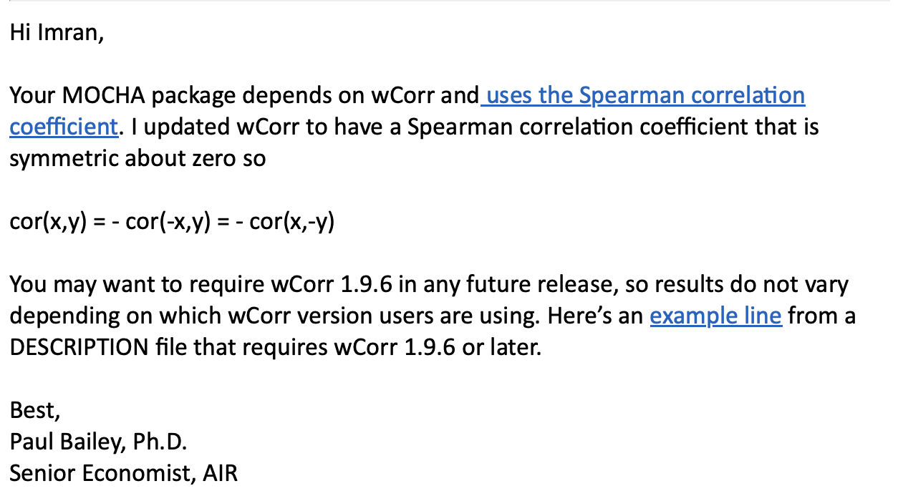

Here is an opinionated collection of “best practices” for developing an R package, written from the perspective of turning existing analysis code into a robust and scalable package for the community. Some some lessons were learned the easy way (reading guides) while others the hard way (through necessity). This will hopefully serve as a living document where adding to it can increase the number of practices that can be learned the easy way.
Though these were written about R development, the gist of most topics here can be applied to other languages.
Resources used:
Preparing for CRAN
Minimize dependencies
Dependencies that cause issues
wCorr was just updated and we received this correspondance:  Previously, we depended on motifmatchr, which depends on TFBSTools which depends finally on CNEr which had an incorrectly declared license causing MOCHA to fail CRAN’s pretest:
> Thanks, we see:
>
> Package has a FOSS license but eventually depends on the following
> package which restricts use:
> CNEr
>
> and so I looked at the license.
> It has a wrongly used "| file LICENSE" as that LICENSE suggests that the
> GPL-2 declaration is invalid as it cannot be FOSS. I made a case for
> this at BioC.A week after emailing the CNEr package maintainer and raising an
issue on GitHub, we decided to just omit the dependency by making it
optional (moving it to Suggests in the
DESCRIPTION) and using it conditionally.
> I see MOCHA is still in the “waiting” folder of CRAN incoming. Are we
> waiting for the maintainers of CNEr to update their license in
Yes, otherwise you need to omit a dependency on a package with an
invalid license.
> Bioconductor? Let me know if I can take any action to help this move
> forward.
Give its maintainer a strong hint?